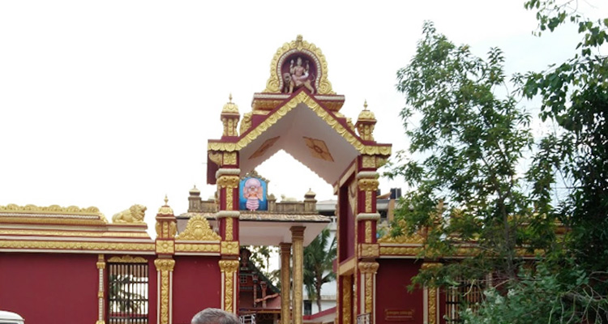
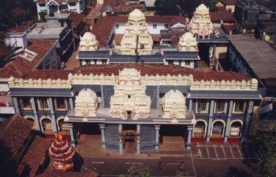

Temples in Mangalore
Kudroli Shree Bhagvathi Temple

Address: Kudroli, Kodailbail, Mangaluru, Karnataka 575003
Shree Sharavu Mahaganapathi Temple

Address: Sharavu Ganapathi Temple Rd, opp. Ideal Towers, Hampankatta, Mangaluru, Karnataka 575001